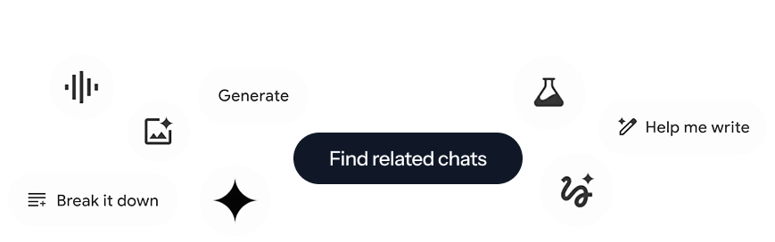
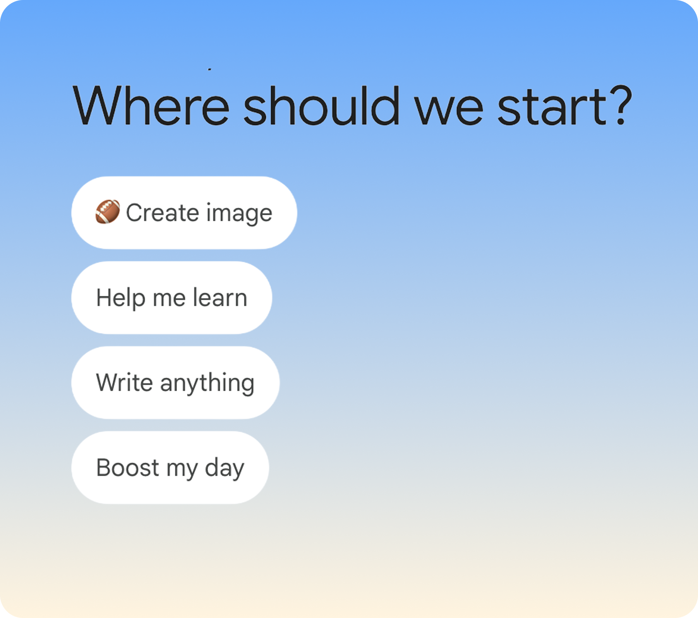
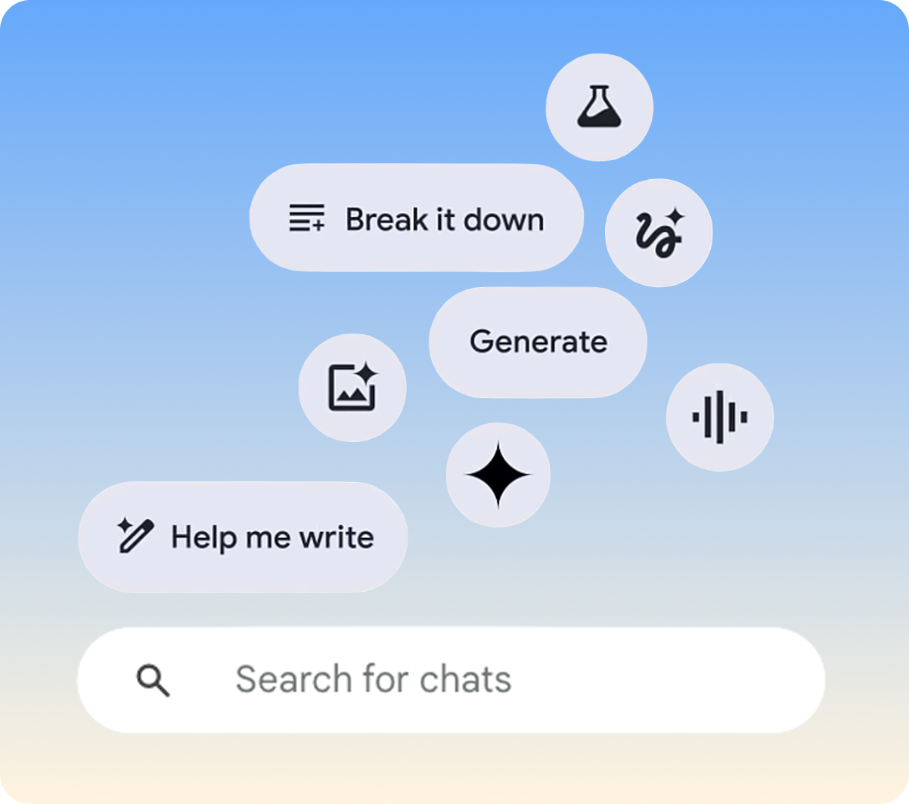
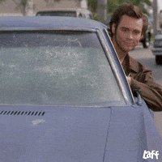
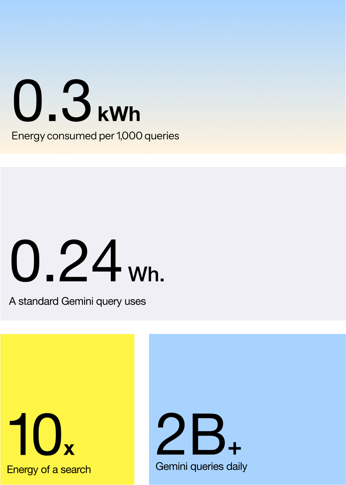
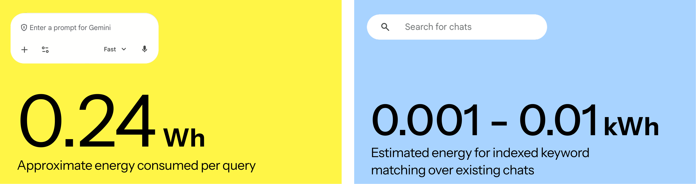
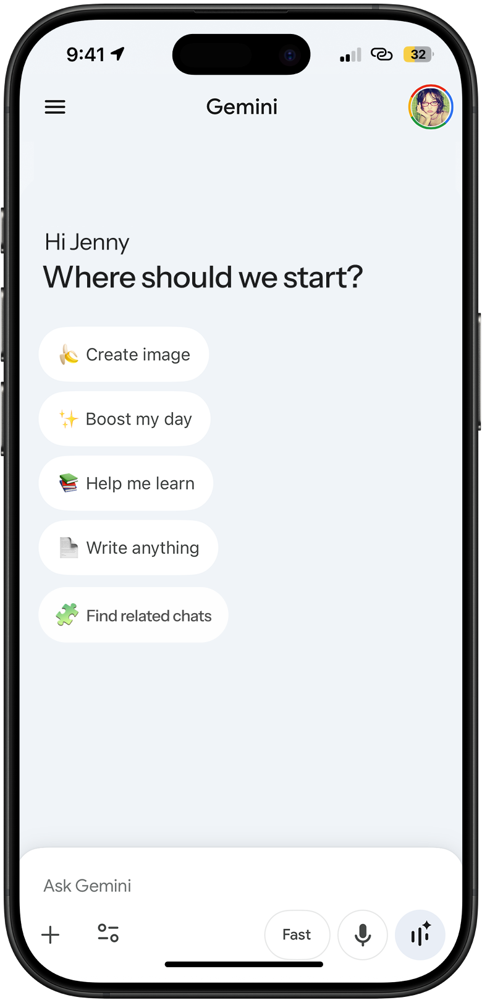

Adaptive Research
Exploring how interaction design can reduce unnecessary AI computation by surfacing relevant past conversations before generating new responses.
Tools


Most users default to starting a new chat rather than revisiting previous conversations. At Google scale, this creates billions of similar conversations with overlapping intent — repeated AI generation without added user value. This project explores how interaction design in Gemini can reduce that waste by surfacing relevant past conversations before generating new responses.
How can the use of LLM be optimized through user behavior?
Users restart instead of rediscovering
Many users default to starting a new chat rather than revisiting previous conversations. This creates many similar conversations with overlapping intent — and at Google scale, small inefficiencies repeat billions of times.
Repeated AI generation without added user value is a sustainability and efficiency problem hiding in plain sight. Improving how users rediscover existing conversations aligns directly with Google's strength and mission.
Re-discovery before generation
A search-first layer inside Gemini that routes simple, factual, and repeatable queries to keyword-based retrieval before invoking full chat intelligence. Before generating a new response, Gemini checks the user's previous chats for similar prompts using keyword-based matching and surfaces them to the user.
A standard Gemini query costs 0.24 Wh. Indexed keyword matching over existing chats costs 0.001–0.01 kWh — orders of magnitude less. By routing familiar queries to retrieval first, the intervention reduces redundant generation and respects the user's time by surfacing answers they already have.




Three moments that change the habit
-

Find Related Chats
- Encourages reviewing past chats before starting a new conversation
- Surfaces a prompt — "If this feels familiar, you may already have something similar saved"
- Reduces the reflex to start from scratch
-

Surface Past Answers
- Shows a ranked list of relevant past conversations with dates
- Checks whether similar questions were recently asked
- Offers those conversations as a starting point before generating
-
Continue, Don't Repeat
- Lets users continue work instead of starting over
- Surfaces past answers so context is preserved
- Reducing repeated AI generation improves efficiency and sustainability at scale
2B+ Gemini queries processed daily
Based on Google's 2025 Environmental Report
The energy cost of repeated queries
A single standard Gemini query consumes 0.24 Wh — roughly 10x the energy of a Google Search. Across 2B+ daily queries, that adds up quickly. 100 Gemini queries consume approximately 24 Wh: enough to drive 450 feet, toast 2 slices of bread, or stream Netflix for 15 minutes.
A large portion of Gemini usage comes from repeated, everyday tasks. Redundant prompts asking the same or similar questions multiple times consume unnecessary compute and energy. Repeated tasks are an opportunity for smarter reuse — and a well-placed design intervention can shift that behavior at scale.


From research to intervention
-

User Interviews
- Daniel: "I don't need the full explanation most of the time"
- Carolyn: "I know I've gotten this answer before, but I can't find it"
- Liam: "I usually just start a new chat, even if I asked something similar earlier"
-

Key Insights
- Repeat: Users return for the same tasks daily
- Restart: Instead of continuing past conversations, users start new prompts
- Forget: Past answers are rarely revisited even when still relevant
-

Ecosystem Analysis
- Foundation: Gemini 2.0 Pro, Flash, Thinking, Imagen 3, Veo 3, Lyria
- Application: NotebookLM, Whisk, Gemini agent, AI Studio, Vertex AI
- Interface: Workspace, Standalone chat, Embedded in Search, Photos, Maps



Reducing AI generation through smarter rediscovery
Takeaways
Interaction decisions have sustainability impact
This project highlighted how individual design choices — where a button lives, what a prompt says — can influence behavior at a scale that translates into measurable energy savings. Sustainability in AI is not just an infrastructure problem; it is a design problem.
Behavior change starts with meeting users where they are
Users restart conversations not out of laziness but because rediscovery is harder than restarting. The right intervention does not ask users to change their habit — it makes the better option feel easier and more obvious than the default.
Efficiency and experience are not in conflict
A search-first layer does not degrade the experience — it improves it by surfacing what users already found useful. Efficiency and helpfulness point in the same direction when the design is grounded in how people actually use the product.